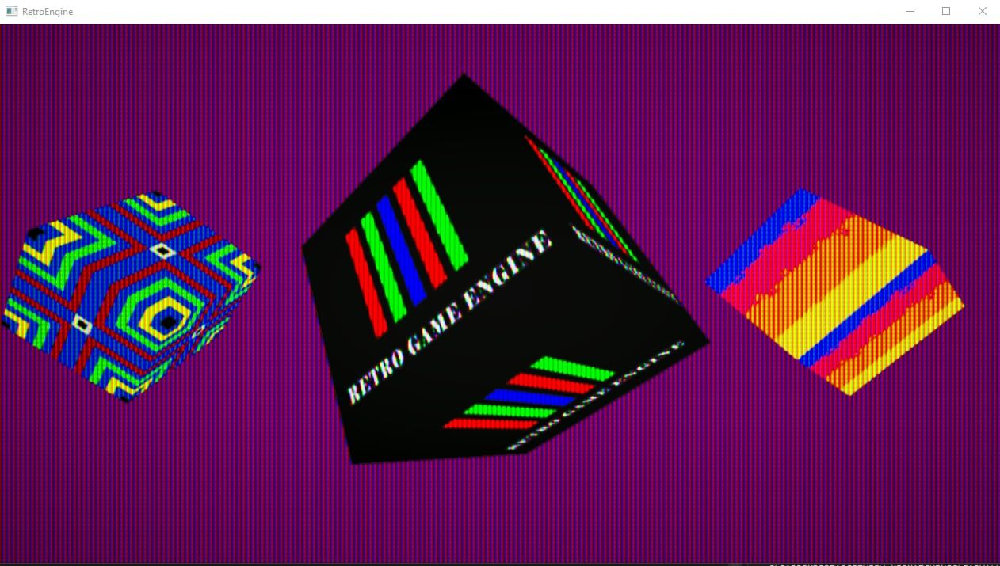
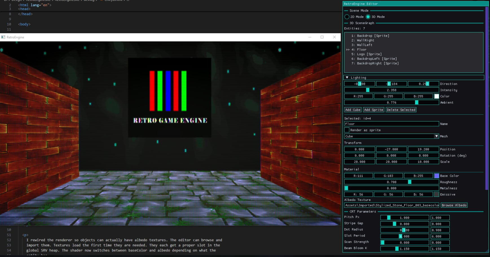
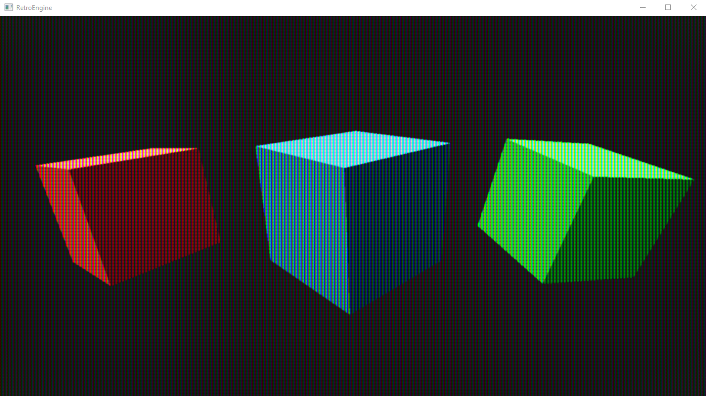
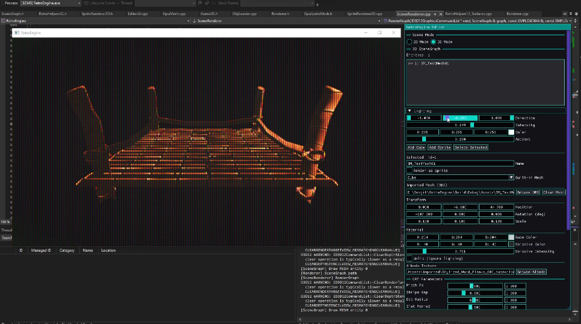
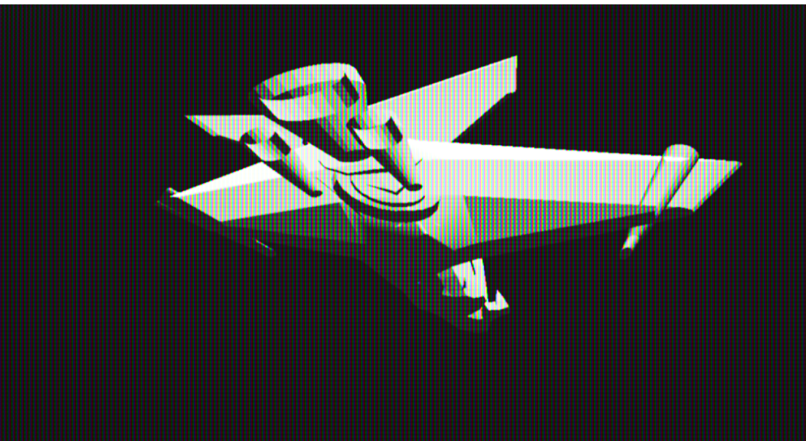
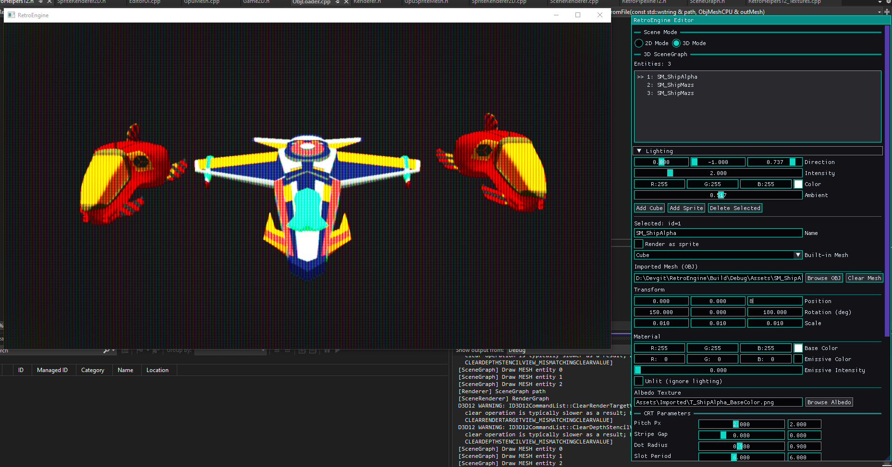

Dragging RetroEngine Out Of The Void
This update started simple: let’s get real lighting and real textures into the 3D renderer. Nothing fancy, just enough to stop staring at blank cubes drifting in empty space.
Of course it wasn’t that easy. Everything fought me. But RetroEngine finally broke out of the placeholder phase and into something that feels like a real rendering pipeline.
Albedo Textures, For Real This Time
Up until now, 3D entities in the engine were just tinted cubes. You could rename objects, move them, duplicate them… and visually none of it mattered too much. They all looked nearly identical.
So the engine now supports actual albedo textures. The editor can browse and pick images, the renderer loads them the first time they’re needed, and each texture lands in a globally-managed SRV heap.
If you’re not deep into rendering work: an SRV heap is basically a giant GPU-side index of textures and resources. Without one, every draw call becomes a scramble to bind textures. With a global heap, everything is predictable, fast, and works nicely with my editor and scene system. It's the backbone of how modern DirectX works, and now RetroEngine has a clean version of it.


Lighting That Fits The Retro Mindset
The lighting system finally exists, and it’s exactly the kind of simple that this engine needs. We have:
- a directional light with adjustable direction, intensity, and color
- an ambient light level that acts as the global “fill” so nothing ever drops into pure black
It’s basic Lambert shading, the stuff you saw everywhere before PBR took over. And honestly it fits the CRT pipeline better than anything more advanced would right now.

Emissive That Behaves Like 90s Hardware
Emissive is officially in. And instead of acting like a modern bloom-heavy highlight, it behaves exactly like older console hardware: emissive pixels are simply bright. No glow radius, no fancy post-processing, no bleeding into neighboring surfaces.
A lot of retro games relied on this look—bright pixels in a dark scene—and the CRT pipeline picks it up beautifully.
Materials Trimmed Down To What Matters
The material system is intentionally simple right now. We support:
- baseColor
- optional albedo texture
- optional emissive
- Lamber-style lighting
The plan is to explore how (or if) roughness and metalness belong in a retro-flavored engine instead of blindly copying modern shading models.
The CRT Shader Became An Accidental Debugger
Once lighting went in, the CRT mask started revealing problems the raw framebuffer completely hid on 3D meshes: slightly broken normals, subtle seams, and incorrect shading transitions.
The CRT pass exaggerates shading enough that it basically turned into a diagnostic tool. It was showing me exactly where something in the pipeline wasn’t behaving.

OBJ Importing: The Highs, The Lows, The Inside-Out Horror
A big milestone: the engine can now import OBJ models through the editor itself. Pick an OBJ, assign it to a mesh entity, and the rest of the engine (materials, transforms, lighting, CRT) just works.
Getting there was… a journey.
When I imported the first spaceship model (from an older game of mine, The Quantum Conflict) the entire mesh rendered inside-out. I could literally see the backfaces through the model. Maya showed perfectly outward-facing normals, but the engine saw the exact opposite.

After chasing depth, normals, culling, transforms—everything, the problem turned out to be a single flawed assumption in my importer. I was “fixing” triangle winding for DirectX… even though the triangles were already correct.
Before:
indices.push_back(i0);
indices.push_back(i2);
indices.push_back(i1);
After:
indices.push_back(i0);
indices.push_back(i1);
indices.push_back(i2);
Three lines. Hours of confusion. And the second I fixed it, the ship popped into place perfectly. Lighting behaved, the CRT pass behaved, everything behaved.
The First Real Imported Mesh
Seeing a real ship model rendered correctly in RetroEngine, with albedo textures and lighting active, was the moment this whole project finally felt like a real engine. Not a prototype. A functioning, extensible pipeline.


Where The Engine Stands Now
- Full OBJ importing integrated into the editor
- Correct normals, correct winding, correct shading
- Working albedo textures
- A global SRV heap managing all textures cleanly
- Lambert lighting with directional + ambient controls
- Emissive support
- A CRT pass that ties it all together
What Comes Next
The next milestones should revolve around expanding the engine framework itself:
- scene saving/loading (JSON or binary)
- half-Lambert shading for softer highlights
- blob shadows
- retro-style specular
- material presets
- expanded mesh importing (MTL, multi-material)
This update took longer than expected, but it brought the engine to a point where building worlds inside it finally feels possible. The tech and the tools are starting to line up.